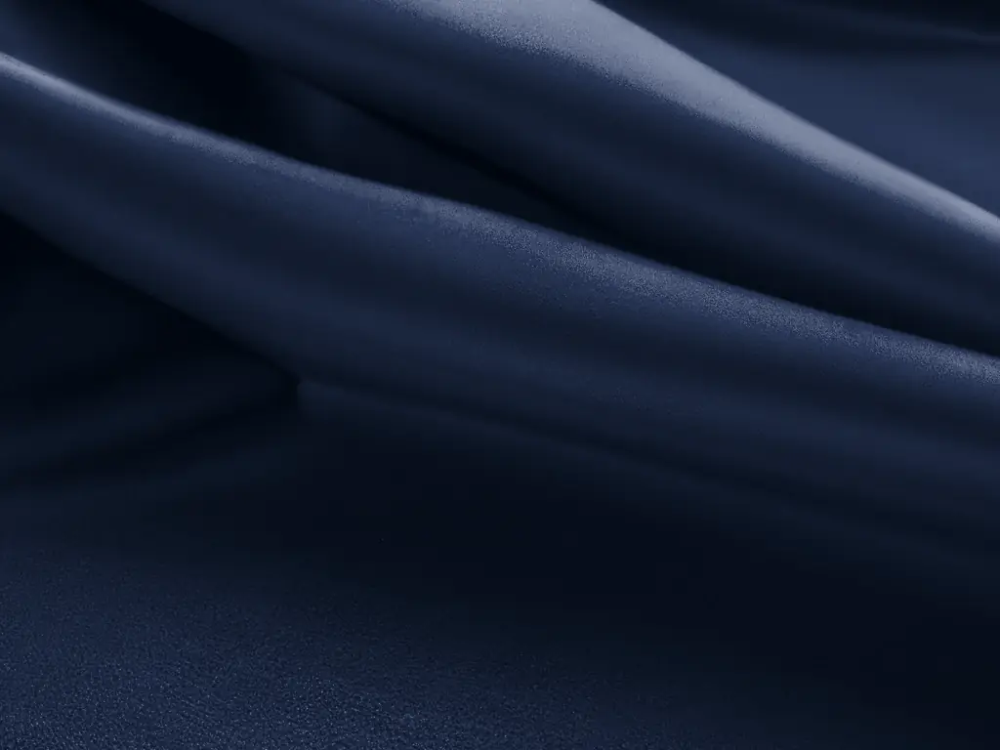
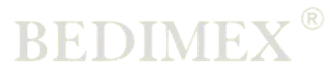

Dodací termíny dodržujeme
Pro jejich dodržení děláme maximum.
O nás
Od roku 1997 si budujeme pověst spolehlivého dodavatele kvalitního zboží.

Výroba tkanin má v Česku dlouholetou tradici a my jsme na ni v roce 1997 navázali. Výroba tkanin je naší hlavní činností a věnujeme se převážně zakázkové výrobě.
V naší nabídce dnes najdete tkaniny z polyesteru, polyamidu, polypropylenu nebo bavlny. Abychom vám celý proces usnadnili, zajišťujeme i návazné služby – od vývoje tkaniny přes finální úpravy až po dopravu zboží.
Dodací termíny jsou pro nás svaté a pro jejich dodržení děláme maximum.
Hodnoty
Pro jejich dodržení děláme maximum.
Chceme práci zpříjemnit sobě i našim zákazníkům, proto se u nás setkáte s přátelským přístupem a vstřícným jednáním.
Od vývoje tkaniny přes finální úpravy až po dopravu.

Napište nám, jakou tkaninu potřebujete – materiál, použití, šíři a množství. Rádi vám pomůžeme najít ideální řešení.